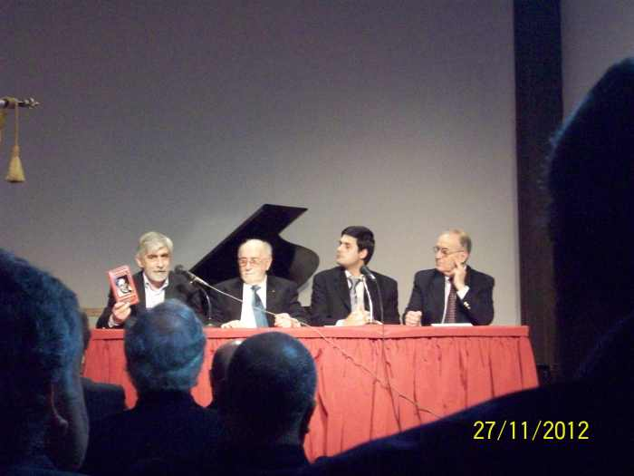

Bibliografía
Publicaciones
Libros, capítulos y artículos sobre historia regional, masonería, patrimonio y educación.

La Masonería en el Este. Una historia por contar
Investigación sobre la presencia masónica en Maldonado, Lavalleja y Rocha. Financiado por el Fondo Concursable para la Cultura (MEC).

Molino Lavagna. 130 años de historia
Patrimonio industrial de San Carlos. Declarado de interés departamental por la Junta de Maldonado.

Antonio M. Grompone: El compromiso de educar
Primer Premio, Certamen de Ensayos de la Masonería del Uruguay. Biografía intelectual de Grompone.
3ª ed. revisada y ampliada
Maldonado y su región
Reedición del clásico de Carlos Seijo (1945). Participación en el Consejo Editorial de IUA Ediciones junto a otros compañeros y redacción de la introducción de la obra.
Capítulo en libro colectivo
La masonería uruguaya y la república laica (1903–1929)
Capítulo en libro colectivo editado por Mariana Annecchini (pp. 185–212).